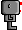

In order to help you learn Python, I will give you some tests: you have to program Reeborg to accomplish specific tasks and Reeborg itself will tell you if you got it right or wrong.
Select the world Home 1. Notice how the bottom left square is coloured differently: this is Reeborg’s home. Reeborg’s world is a simple grid. In Home 1, Reeborg starts at the third square on the bottom row. It labels this square as x=3 and y=1, using what is known as Cartesian coordinates.
Try this!
Write a program with a single move() instruction, run it and notice what feedback Reeborg gives you. Then, change your program so that Reeborg go home.
Try two more!
Select Home 2. Notice how Reeborg is in a different location and is also facing you. Try running the exact same program and see what happens.
Next, select Home 3. Notice how there is a small black square in the home position. Try to run your program now.
Last example ended with a program that did not quite work: something about Reeborg not being in the right orientation. If you look at the green home square, you will notice a small black square on its right edge: this is the direction Reeborg should be facing. In order to do so, we must add one more instruction to the program:
turn_left()
Try this!
Make sure that Reeborg goes home in Home 3.
Try something else!
What happens if, instead of using turn_left(), you use instead a third move() instruction?
You may have noticed that Reeborg (the robot itself) is seen from its
side, such as  whereas his world is seen from above ... which
you might perhaps find confusing especially when you instruct Reeborg to
turn left. You can change the way Reeborg is seen by either using the
clicking on the appropriate image below Reeborg’s world.
For example, when facing East, such as the side view above, using a different
image, Reeborg can appear as follows when viewed from above: 
 Reeborg's World
Reeborg's World